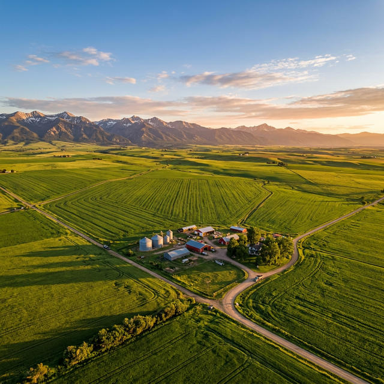

Jackson Farms is a family-operated agricultural LLC nestled in the heart of Crowley County, committed to sustainable farming and modern agricultural practices.

Founded in early 2022, Jackson Farms (officially registered as Jackson's Farms, LLC) is rooted in the rich agricultural tradition of Southeast Colorado. Located at 8295 Maverick Lane in Ordway, we operate proudly within Crowley County — a region known for its dedicated farming communities and vast open landscapes.
Under the stewardship of Dwight Ringler, our operation maintains a steadfast commitment to sustainable practices, efficient resource management, and the modernization of traditional farming methods. Our LLC is currently in Good Standing with the Colorado Secretary of State.
Eco-conscious farming methods
Smart irrigation management
Modern technology integration
Supporting local agriculture
From crop production to water resource management, Jackson Farms leverages modern techniques and deep agricultural knowledge to deliver excellence.
Growing region-appropriate crops suited to the Southeast Colorado climate, utilizing precision agriculture techniques for optimal yield and sustainability.
Responsible livestock operations with a focus on animal welfare, sustainable grazing practices, and efficient herd management systems.
Critical water management in Colorado's arid climate — implementing advanced irrigation, monitoring usage, and ensuring compliance with state regulations.
Maintaining a fleet of modern agricultural machinery with preventive maintenance schedules and data-driven equipment lifecycle management.
Our proprietary dashboard centralizes all farm data — from crop tracking to financial reporting — giving us real-time visibility into every aspect of our operations.
Access critical farm data from remote fields without internet connectivity. Sync automatically when back online.
Automated notifications for severe weather conditions specific to the Ordway, CO region — hail, frost, and drought warnings.
Real-time expense vs. yield analysis, seasonal budget forecasting, and comprehensive financial reporting.
Automated regulatory reports for the Colorado Secretary of State and other agricultural agencies — always audit-ready.
Nestled in the expansive plains of Southeast Colorado, Ordway is a community built on agriculture. The region's semi-arid climate and open landscapes make it ideal for diverse agricultural operations — from crop production to livestock management.
Have a question, partnership opportunity, or simply want to learn more about our operations? Drop us a line — we'd love to connect.